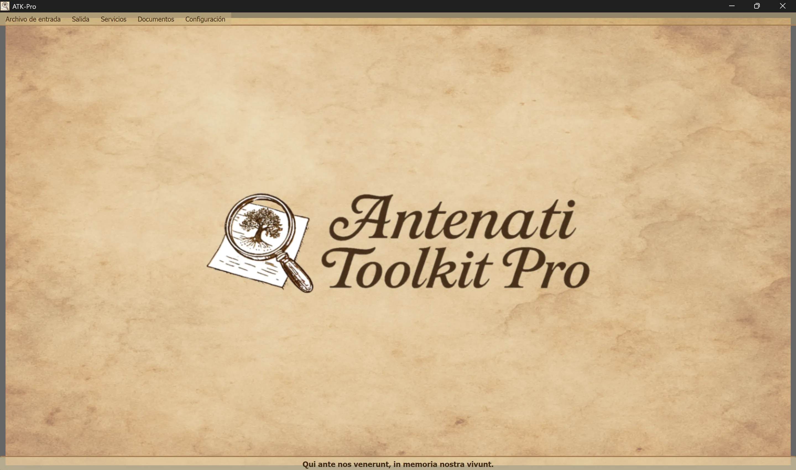

────────────────────────────────────────────────────────────────────────────────
🪟 Windows
ATK-Pro-Setup-vx.x.x.exe desde la página oficial de versiones🐧 Linux
ATK-Pro-vx.x.x.deb (Debian/Ubuntu) o .tar.gz desde la página de versionessudo dpkg -i ATK-Pro-vx.x.x.deb o haz doble clic en Nautilus/Files./ATK-Pro desde la carpeta extraída🍎 macOS
ATK-Pro-vx.x.x.dmg desde la página de versiones🪟 Windows
C:\Program Files\ATK-Pro\C:\Users\[TuNombre]\Documents\ATK-Pro\output\C:\Users\[TuNombre]\Documents\ATK-Pro\input\🐧 Linux
/opt/ATK-Pro/ (deb) o carpeta extraída (.tar.gz)~/Documents/ATK-Pro/output/~/Documents/ATK-Pro/input/🍎 macOS
/Applications/ATK-Pro.app~/Documents/ATK-Pro/output/~/Documents/ATK-Pro/input/────────────────────────────────────────────────────────────────────────────────
Los idiomas disponibles son:
con las cuales, según los datos disponibles a finales de 2025, se estima que se podrá cubrir aproximadamente el 98% de los descendientes de italianos y de las comunidades italianas o italófonas repartidas por el mundo.
La primera vez que se ejecuta, el programa crea automáticamente las siguientes carpetas:
C:\Users\[TuNombre]\Documents\ATK-Pro\output\C:\Users\[TuNombre]\Documents\ATK-Pro\output\doc\ (documentos predeterminados)C:\Users\[TuNombre]\Documents\ATK-Pro\output\reg\ (registros predeterminados)~/Documents/ATK-Pro/output/input\ equivalente (opcional, para archivos de entrada)Durante el procesamiento se crean carpetas temporales para los mosaicos descargados (tiles_canvas_X/) y, si se solicita el PDF, archivos temporales para generarlo.
Todas las carpetas y los archivos temporales se eliminan automáticamente al finalizar el procesamiento.
Solo permanecen los archivos finales procesados (imágenes en los formatos elegidos, PDF, manifiesto y metadatos).
Para modificar la carpeta de salida, usa Menú → Configuración → "Seleccionar carpeta de salida". La opción elegida se guarda y se restaura automáticamente en la siguiente sesión.
El comando Configuración → Perfil de recursos regula el paralelismo utilizado durante la descarga, la reconstrucción de las imágenes y la generación de los PDF:
El perfil no modifica la calidad, los derechos ni la cantidad de los documentos adquiridos. Los límites prudenciales específicos de cada portal siguen teniendo prioridad.
────────────────────────────────────────────────────────────────────────────────
La ventana principal de Antenati Toolkit Pro tiene una estructura sencilla e intuitiva.

Al pie se reproduce el lema latino “Qui ante nos venerunt, in memoria nostra vivunt”, para recordar la importancia de las raíces y de la memoria colectiva.
En la parte superior de la ventana, debajo del encabezado:
[Archivo de entrada] [Salida] [Servicios] [Documentos] [Configuración]
Cada menú contiene botones y opciones específicas (véase la sección siguiente).
Gestiona la carga de los registros IIIF:
├─ Ejemplo de entrada
│ └─ Muestra el archivo de ejemplo (presenta el formato por pares: modo D/R + URL)
├─ Abrir entrada
│ └─ Selecciona un archivo .txt con tus registros IIIF
│ (Debe contener pares: modo D/R en la línea 1, URL en la línea 2)
└─ Editar entrada
└─ Edita el archivo de entrada cargado actualmente
(Añade/elimina registros, cambia URL y guarda los cambios)
Gestiona el procesamiento y la salida:
├─ Procesar │ └─ Inicia la descarga, la reconstrucción y el guardado de las imágenes │ (Muestra una ventana de progreso en tiempo real) ├─ Abrir carpeta de salida │ └─ Abre en el Explorador de archivos la carpeta que contiene los archivos procesados └─ Ver procesamientos anteriores └─ Lista de los registros ya procesados
Lista de los servicios integrados:
├─ Búsqueda asistida por IA │ └─ Sugiere portales, líneas de investigación y consultas genealógicas que deben verificarse ├─ Visualización de imágenes │ └─ Visor de imágenes descargadas y/o PDF generados ├─ Visualización de metadatos JSON │ └─ JSON originales y metadatos (genealógicos, técnicos y EXIF) ├─ OCR avanzado │ └─ Textos manuscritos del siglo XIX, latín eclesiástico y textos de finales de la Edad Media ├─ Traducción de OCR │ └─ Traducción automática de los textos extraídos a los idiomas seleccionados └─ Exportación GEDCOM └─ GEDCOM, Gramps, Family Tree Maker, Ancestry, MyHeritage, WikiTree, etc.
Acceso a recursos y documentación:
├─ Aviso legal - Cláusulas legales y términos de uso ├─ Presentación del autor - Trayectoria del autor del proyecto ├─ Presentación del proyecto - Historia, motivaciones y hoja de ruta de ATK-Pro ├─ Guía - Índice principal de la guía modular └─ Información - Versión, derechos de autor y correo electrónico de contacto
Configuración general del programa:
├─ Cambiar idioma
│ └─ Selecciona el idioma de la interfaz (requiere reiniciar)
├─ Seleccionar formatos de imagen
│ └─ Elige entre PNG, JPG, TIFF y PDF (es obligatorio seleccionar al menos 1)
│ PDF puede seleccionarse solo o junto con los formatos de imagen
│ La selección se guarda y se preselecciona automáticamente en la siguiente sesión
├─ Seleccionar carpeta de salida
│ └─ Abre primero la selección del modo de organización de las carpetas y, a continuación, las ventanas de selección:
│ • Carpeta única para todos → una sola carpeta para documentos y registros
│ • Carpetas separadas doc./reg. → una carpeta para todos los documentos y otra para todos los registros
│ • Carpeta para cada registro → una carpeta distinta para cada registro
│ El modo y las carpetas se guardan y se restauran en la siguiente sesión
├─ Exportar configuración
│ └─ Guarda la configuración actual en un archivo
├─ Importar configuración
│ └─ Carga un archivo de configuración guardado anteriormente (restaura todas las preferencias y rutas)
├─ Buscar actualizaciones
│ └─ Comprueba si hay nuevas versiones del programa disponibles
└─ Cerrar
└─ Finaliza el programa (muestra un banner de apoyo de PayPal.me)
────────────────────────────────────────────────────────────────────────────────
ATK-Pro está disponible en 20 idiomas:
El idioma se puede cambiar en cualquier momento mediante Menú → Configuración → Cambiar idioma.
Es necesario reiniciar el programa para aplicar el nuevo idioma.
Tras reiniciarse, el programa carga automáticamente el nuevo idioma seleccionado.
Al cambiar de idioma, se traducen:
Si un modelo predeterminado se retira o deja de estar disponible, ATK-Pro consulta el catálogo visible para la credencial, selecciona un modelo general compatible con la función y con imágenes cuando sea necesario, y prueba hasta tres alternativas. El fallback no se activa ante errores de cuota, red o autenticación.
Modelo personalizado: un modelo introducido manualmente sigue siendo obligatorio y nunca se sustituye automáticamente.